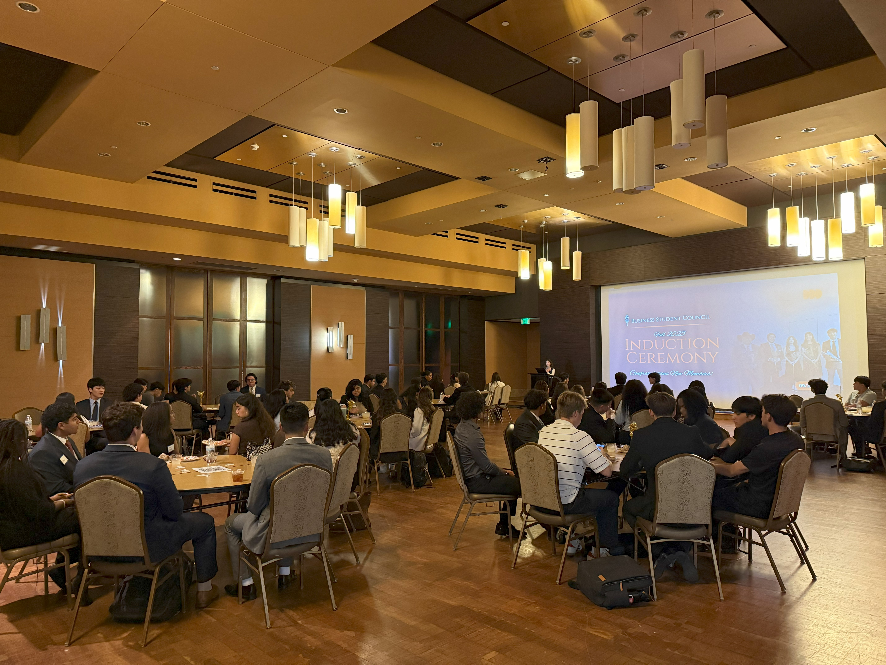
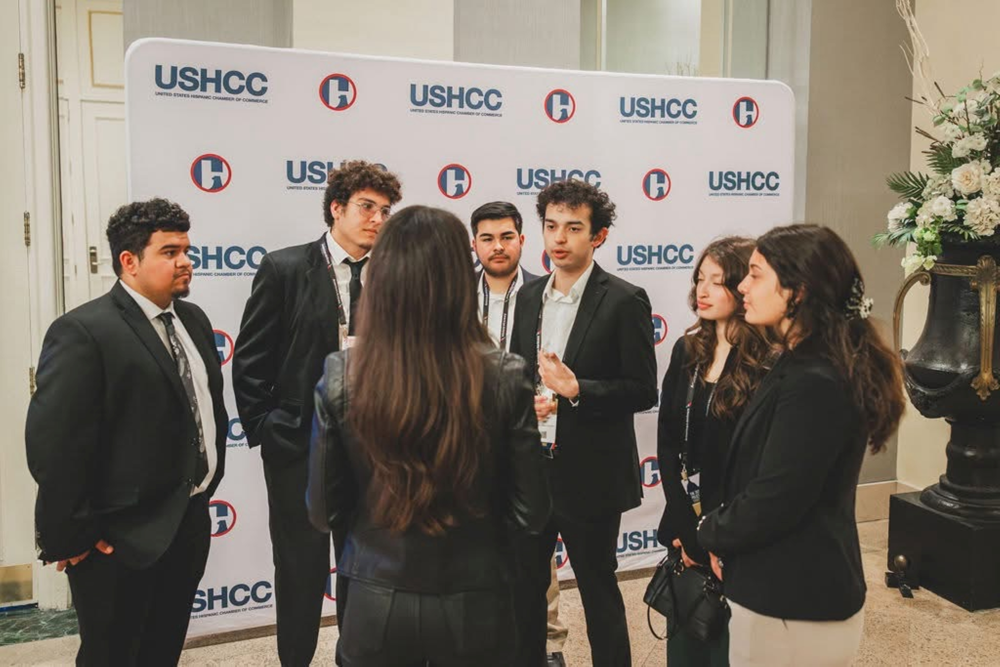
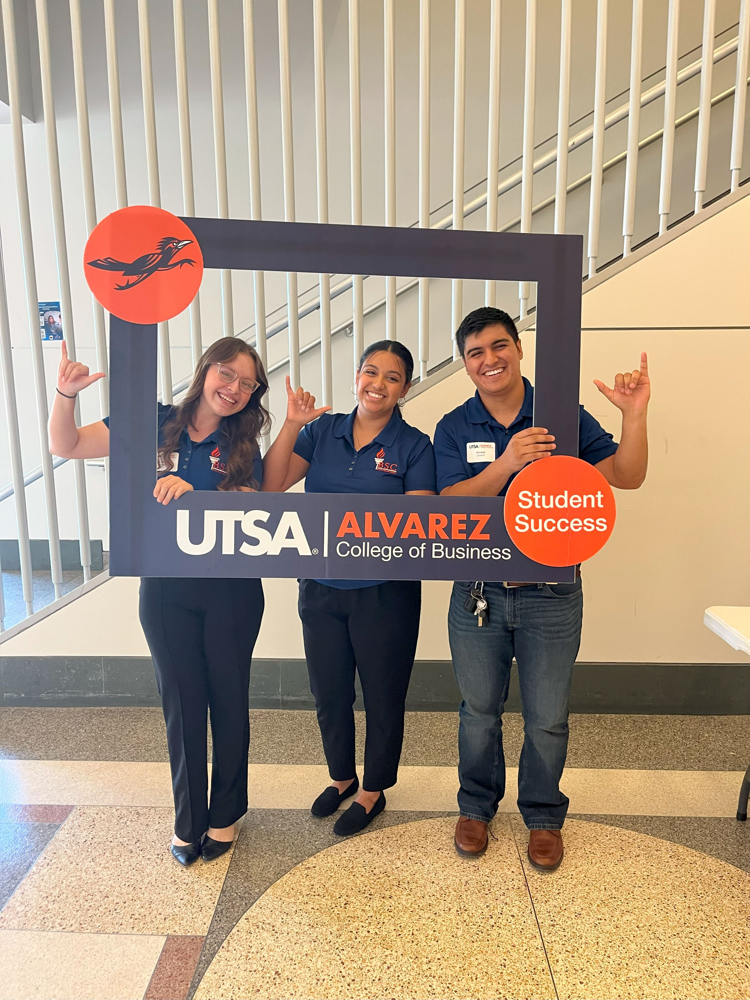

The Business Student Council (BSC) represents business students at the Carlos Alvarez College of Business, promoting collaboration between faculty, student organizations, and business majors.
BSC prepares members for success with mentorship, workshops, and events, empowering them with the skills needed to thrive in their careers.

The Business Student Council (BSC) connects faculty, student organizations, and business majors within the Carlos Alvarez College of Business. We foster collaboration, support professional growth, and equip our members with the skills and opportunities needed to excel as student leaders and future professionals.
BSC equips students with essential business skills through professional and leadership opportunities. We offer valuable experiences via networking, mentorship, and leadership roles. In the future, we aim to strengthen ties with the San Antonio community and foster a collaborative environment among members.

The Business Student Council (BSC) at UT San Antonio, founded in 2007 as an extension of the Alvarez College of Business to create a bridge between business RSOs, faculty and students. BSC supports student success in the Alvarez College of Business through professional development, professor recognition, and student achievement awards. BSC also plays a key role in shaping future business leaders.